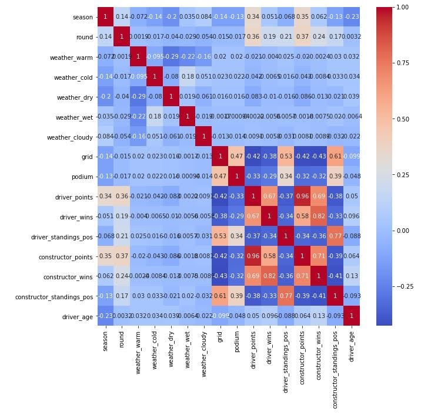
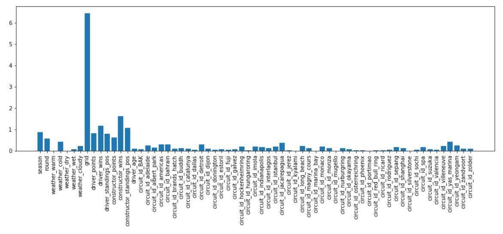

From Novice to Superfan: The Motivation
Before this project, I knew absolutely nothing about Formula 1. My teammate, however, was a die-hard fan and a RedBull enthusiast. His passion was infectious, and we decided to tackle a project that combined data science with the high-stakes world of racing.
The process turned me into a convert. As we dug into the data, I found myself curling up on the couch on race weekends, cheering and screaming at every Grand Prix until the checkered flag. Unlike other racing series, F1 cars are not equal; teams invest millions into engineering, creating significant performance disparities. Our goal was to cut through this noise and build a model for bettors that could predict the **Top 3 (Podium)** finishers more accurately than just looking at the qualifying grid.
Exploratory Data Analysis (EDA)
We utilized a dataset covering 662 races from 1983 to 2020. Our first step was to understand what actually drives a win. We used correlation heatmaps to visualize relationships between features like grid position, constructor standings, and final race position.

We also investigated the "Home Field Advantage." For instance, Lewis Hamilton is British and races at his home track of Silverstone. By plotting his finish positions at Silverstone against his yearly average, we observed a clear trend: he consistently outperforms his average when racing on home soil.

Modeling Methodology
This was framed as a classification problem: Class 1 (Podium Finish) vs. Class 0 (No Podium). To avoid "data leakage" (predicting the past using future data), we split our data chronologically:
- Training Set: 1983 - 2016
- Testing Set: 2017 - 2020
We developed and tuned four distinct models: Logistic Regression (with sampling weights), Decision Tree Classifier, Random Forest Classifier (with hyperparameter optimization), and a Neural Network (using Keras with batch normalization and dropout).
Feature importance analysis confirmed that Qualifying (Grid) Position is the single most critical factor in predicting race outcomes, though team reliability also plays a massive role.

Performance Evaluation
Since our goal was to help bettors identify winners, we prioritized Precision over raw accuracy. A high precision score means that when our model predicts a driver will be in the Top 3, they are highly likely to actually be there.
| Model | Precision | Accuracy | Recall |
|---|---|---|---|
| Logistic Regression (Best) | 0.709 | 0.911 | 0.709 |
| Neural Network | 0.700 | 0.909 | 0.700 |
| Decision Tree | 0.696 | 0.903 | 0.679 |
| Random Forest | 0.662 | 0.897 | 0.662 |
| Baseline (Random) | 0.160 | 0.744 | 0.160 |

Conclusion
Surprisingly, the simpler Logistic Regression model outperformed the more complex Random Forest and Neural Network models, achieving a precision of nearly 71%.
However, predicting F1 is notoriously difficult due to frequent regulation changes and the "noise" of mechanical failures or crashes. While our model performs significantly better than random guessing, future improvements would focus on engineered features that separate driver skill from car performance more distinctly.